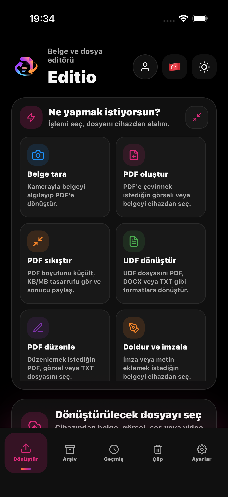
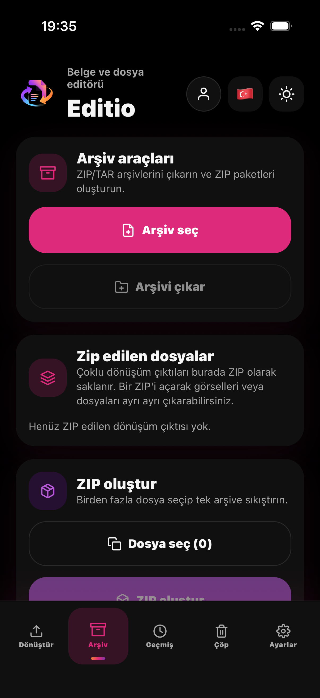
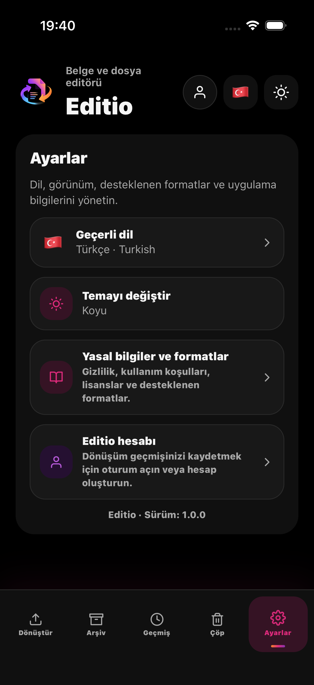

Hızlı dosya dönüştürme
PDF, UDF, belge, tablo, görsel, ses ve desteklenen video biçimleri arasında gerçek uygulamada sunulan dönüşümleri kullanın.
Editio mobil dosya araçları
Editio ile PDF, görsel ve desteklenen medya dosyalarınızı dönüştürün, sıkıştırın, düzenleyin ve kolayca dışa aktarın.
Hesap oluşturmadan kullanmaya başlayabilirsiniz.



Tek uygulama, anlaşılır araçlar
Editio'nun araçları, dosya seçme adımından kaydetme ve paylaşmaya kadar aynı tutarlı mobil akışta çalışır.
PDF, UDF, belge, tablo, görsel, ses ve desteklenen video biçimleri arasında gerçek uygulamada sunulan dönüşümleri kullanın.
PDF sayfalarını görüntüleyin; metin, imza, vurgu ve çizim ekleyin ya da sayfaları görsel olarak dışa aktarın.
Cihazınızdaki JPG veya PNG görsellerini seçerek tek bir PDF belgesinde birleştirin.
PDF için kalite tercihinizi belirleyin, dosya boyutundaki değişimi görün ve oluşan belgeyi paylaşın.
Hazırlanan çıktıları cihazın yerel paylaşım seçenekleriyle Dosyalar'a, mesajlara veya uyumlu uygulamalara aktarın.
Dosya dönüştürmek için hesap gerekmez. Dilerseniz Ayarlar bölümünden Editio hesabı oluşturabilirsiniz.
Desteklenen akışlar
Uygun çıktı seçenekleri seçtiğiniz kaynak dosyaya ve cihaz desteğine göre otomatik gösterilir.
Format kullanılabilirliği kaynak dosyaya, platforma ve seçilen işleme göre değişebilir.
Nasıl çalışır?
Dosyalar, fotoğraflar veya desteklenen işlemlerde kameradan belgenizi güvenli sistem seçicileriyle alın.
Kaynak biçime uygun çıktı formatını, sıkıştırma seviyesini veya düzenleme aracını seçin.
Sonucu önizleyin; cihazınıza kaydedin ya da yerel paylaşım menüsüyle istediğiniz uygulamaya gönderin.
Gizlilik ve güvenlik
Editio, dosyalarınızı yalnızca seçtiğiniz işlemi gerçekleştirmek için işler. Ne yaptığımızı açık ve doğrulanabilir biçimde anlatıyoruz.
Temel dönüştürme ve düzenleme akışlarını hesap oluşturmadan başlatabilirsiniz.
Backend gerektiren işlemlerde uygulama ile Editio API arasındaki iletişim HTTPS üzerinden yapılır.
Sunucuya aktarılan işlem dosyaları kalıcı bulut depolama amacıyla tutulmaz ve temizlik sürecine alınır.
Editio reklam göstermez ve kullanıcı verilerini reklam verenlere satmaz.
Editio hesabı
Dosya dönüştürmek için hesap oluşturmanız gerekmez. Uygulamayı indirip desteklenen işlemleri doğrudan kullanabilirsiniz.
Editio hesabınızı isteğe bağlı olarak Ayarlar bölümünden oluşturabilir; profil, oturum ve hesap silme seçeneklerini buradan yönetebilirsiniz.
Hakkımızda
Editio'yu, günlük dosya işlemlerini daha hızlı, sade ve anlaşılır hâle getirmek için geliştirdik.
Karmaşık araçları ve gereksiz adımları azaltarak PDF ve dosya işlemlerini modern bir mobil deneyime dönüştürmeyi amaçlıyoruz.
Editio Pro hazırlığı
Abonelik planları henüz satışa açık değil. Yayın ve satın alma ayrıntıları hazır olduğunda burada ve uygulamada gösterilecek.
Şu anda
Kullanım koşulları ve sunulan özellikler App Store sürümüne göre kesinleşecek.
Yakında
Planlar satışa açıldığında yerel fiyat, dönem ve yenileme koşulları satın almadan önce Apple tarafından gösterilecek.
Basit ve şeffaf kullanım
İlk üç başarılı dönüşüm ücretsizdir. Abonelik isteğe bağlıdır ve uygulamanın satın alma ekranından yönetilir.
Ücretsiz
Hesap zorunluluğu olmadan Editio'nun dönüşüm akışlarını deneyin. Başarısız veya iptal edilen işlemler hakkınızı tüketmez.
Editio Pro
Aylık veya yıllık otomatik yenilenen planlardan birini seçin. Güncel yerel fiyat ve dönem, satın almadan önce App Store tarafından gösterilir.
Abonelik Apple tarafından faturalandırılır. Hesabı silmek aboneliği otomatik olarak iptal etmez.
Sık sorulan sorular
Editio App Store yayınına hazırlanıyor. Mağaza bağlantısı yayınlandığında bu sayfadaki düğme güncellenecek.